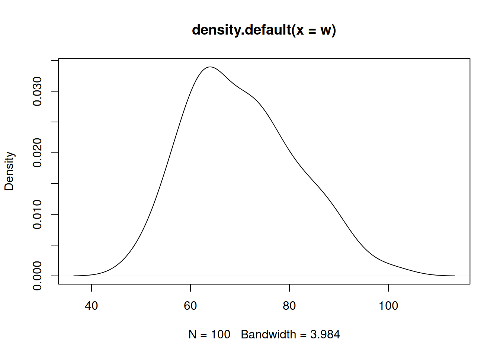

chisq.test(x=obs,p=esp) |
|
| paquete: MASS | library(MASS) |
chisq.test(M) # M: matriz |
|
| paquete: BSDA | library(BSDA) |
SIGN.test(x,md=15,alternative = "greater") |
|
wilcox.test(g1,g2,paired = FALSE,alternative = "less") |
|
| Pruebas de normalidad | |
shapiro.test(x) |
|
| paquete:normtest | library(normtest) |
ajb.norm.test(x) |
|
frosini.norm.test(x) |
|
geary.norm.test(x) |
|
hegazy1.norm.test(x) |
|
hegazy2.norm.test(x) |
|
jb.norm.test(x) |
|
kurtosis.norm.test(x) |
|
skewness.norm.test(x) |
|
spiegelhalter.norm.test(x) |
|
wb.norm.test(x) |
|
| paquete: nortest | library(nortest) |
ad.test(x) |
|
cvm.test(x) |
|
lillie.test(x) |
|
pearson.test(x) |
|
sf.test(x) |
De rachas
Se desea estraer una muestra aleatoria del grupo de participantes y probar que es aleatoria con respecto al sexo.
| \(Ho\): \(X\) es aleatoria |
| \(Ha\): \(X\) NO es aleatoria |
library(randtests)
x=sample(CarreraLuz22$sex, 100)
rachas<-as.numeric(x=="Hombre")
runs.test(rachas,alternative = "left.sided",threshold = 0.5,pvalue = "exact",plot=F)
Runs Test
data: rachas
statistic = -0.77069, runs = 47, n1 = 53, n2 = 47, n = 100, p-value =
0.2513
alternative hypothesis: trendDe normalidad
Existen varias pruebas de hipótesis para verificar si una variable tiene un comportamiento aproximadamente normal.En todos los casos las hipótesis planteadas son:
| \(Ho\): \(X\) tiene distribución Normal |
| \(Ha\): \(X\) no tiene distribución Normal |
plot(density(w))
Shapiro Wilk
shapiro.test(w)
Shapiro-Wilk normality test
data: w
W = 0.97905, p-value = 0.1121Esta prueba no requiere la instalación de paquetes adicionales, está disponible en la configuración básica de R
Paquete normtest
Las siguientes pruebas requieren instalar y cargar el paquete:
normtest
# install.packages("normtets")
library(normtest)Jarque-Bera ajustado
ajb.norm.test(w)
Adjusted Jarque-Bera test for normality
data: w
AJB = 3.7737, p-value = 0.115Frosini
frosini.norm.test(w)
Frosini test for normality
data: w
B = 0.26557, p-value = 0.08Geary
geary.norm.test(w)
Geary test for normality
data: w
d = 0.82206, p-value = 0.1375Hagazy-Green 1
hegazy1.norm.test(w)
Hegazy-Green test for normality
data: w
T = 0.10963, p-value = 0.075Hagazy-Green 2
hegazy2.norm.test(w)
Hegazy-Green test for normality
data: w
T = 0.019091, p-value = 0.194Jarque-Bera
jb.norm.test(w)
Jarque-Bera test for normality
data: w
JB = 3.6821, p-value = 0.104de kurtosis
kurtosis.norm.test(w)
Kurtosis test for normality
data: w
T = 2.6449, p-value = 0.444de sesgo
skewness.norm.test(w)
Skewness test for normality
data: w
T = 0.4352, p-value = 0.0685Spiegelhalter
spiegelhalter.norm.test(w)
Spiegelhalter test for normality
data: w
T = 1.2165, p-value = 0.8695Weisberg-Bingham
wb.norm.test(w)
Weisberg-Bingham test for normality
data: w
WB = 0.98099, p-value = 0.13Las siguientes pruebas requieren instalar y cargar el paquete:
nortest
# install.packages("nortets")
library(nortest)Anderson-Darling
ad.test(w)
Anderson-Darling normality test
data: w
A = 0.65549, p-value = 0.08464Cramer-von Mises
cvm.test(w)
Cramer-von Mises normality test
data: w
W = 0.1096, p-value = 0.08168Lilliefors (Kolmogorov-Smirnov)
lillie.test(w)
Lilliefors (Kolmogorov-Smirnov) normality test
data: w
D = 0.085674, p-value = 0.06747chi-cuadrado de Pearson
pearson.test(w)
Pearson chi-square normality test
data: w
P = 12.06, p-value = 0.2811Shapiro-Francia
sf.test(w)
Shapiro-Francia normality test
data: w
W = 0.98099, p-value = 0.1394En todos los casos se presenta un valor-p grande por lo cual no se rechaza \(Ho\), asumimos que \(Ho\) es verdad. Asumimos que la distribución de la variable \(X\) es normal
Referencias :